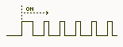
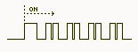
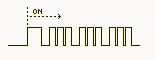
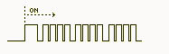
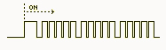
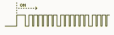
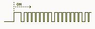
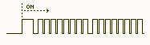

Read faultcodes:
Turn the ignition on and wait until the airbag indicator lamp goes dark.
In a few seconds the lamp starts to flash out the faultcodes.
Count the number of flashes.

1 flash: Drivers airbag – Resistance in the ignition circuit differs from the limit value.

2 flash: Passenger airbag – Resistance in the ignition circuit differs from the limit value.

3 flash: Driver and passenger airbag - Funktion error in common circuit.

4 flash: Pyrotechnic safety belt pretensioner driver /passenger - Funktion error in circuit.

5 flash: Driver sideairbag – Resistance in ignition circuit differs from the limit value, shortcut.

6 flash: Passenger sideairbag – Resistance in ignition circuit differs from the limit value, shortcut.

7 flash: Driver side impact crash sensor – circuit error

8 flash: Passenger side impact crash sensor – circuit error
Erase faultcodes:
The faultcodes will be automaticly erased when the fault is repaired.